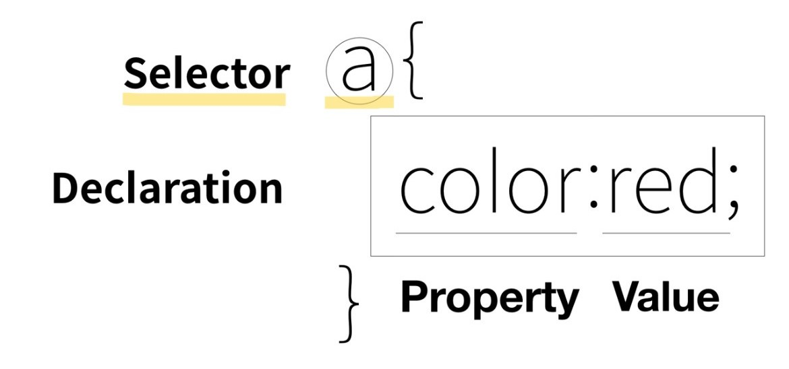

Programming language
전체 선택자
태그 선택자
class 선택자
id 선택자
예시 코드 : style
a
{color:red;} /style

a
- 이
웹 페이지의
모든 a라는 태그
에게
어떠한 효과를 준다.
즉, "
주고 싶은 효과
를
누구에게 줄 것인가
를
선택
하다" 라는 점에서 저것을
선택자Selector
라고 부릅니다.
선택자Selector
는
태그의 전체
가
될 수도 있고
, 때로는
여러 개의 요소들을 묶어
별도의 선택자
로 만들 수도 있습니다.